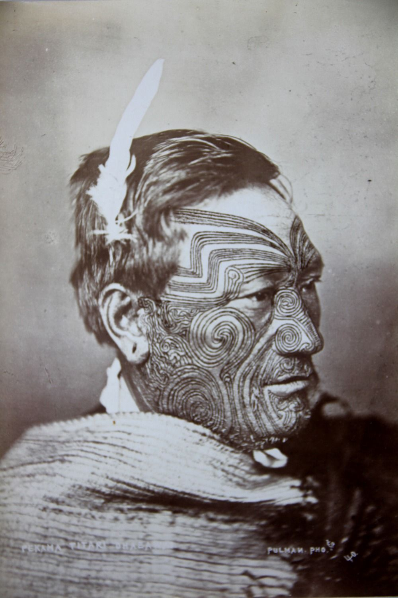

El tatuaje en la edad media
Galeria de imagenes
Antes de la llegada de los europeos, muchas culturas originarias de América practicaban el tatuaje como una forma de identidad, espiritualidad y pertenencia. Cada pueblo tenía sus propias técnicas y símbolos, pero en general el tatuaje era un lenguaje visual que expresaba la conexión con la naturaleza, los dioses o los antepasados. En muchos casos, servía también para marcar el paso de la niñez a la adultez, o el estatus dentro de la comunidad.
Los pueblos originarios elaboraban sus tintas a partir de carbón, cenizas, plantas o minerales. Las herramientas eran espinas, huesos afilados o pequeñas agujas hechas de madera. El proceso era doloroso y sagrado, realizado por personas con conocimiento ritual. Cada tatuaje tenía una intención: proteger, sanar o conectar con fuerzas superiores.
Más que una decoración, el tatuaje en los pueblos originarios representaba una historia personal y colectiva. En muchos casos, las marcas en la piel narraban batallas, roles dentro del clan o la relación con ciertos animales de poder. El cuerpo era entendido como un espacio de comunicación con el mundo espiritual, no simplemente físico.
El tatuaje japonés tradicional, conocido como irezumi, tiene raíces antiguas en Japón, pero alcanzó un significado especial dentro de la organización criminal Yakuza. Lo que en un inicio se usaba como castigo para criminales —marcando su piel para identificarlos— fue reapropiado por los miembros de la Yakuza como símbolo de orgullo y desafío.
Para los Yakuza, el tatuaje no era solo un adorno: representaba lealtad, valentía y resistencia al dolor. El proceso del irezumi tradicional era extremadamente doloroso, ya que se realizaba con agujas manuales y pigmentos naturales que tardaban meses o incluso años en completarse. Quien soportaba este sacrificio demostraba disciplina y compromiso con su clan.
Durante siglos, los tatuajes fueron mal vistos por la sociedad japonesa y asociados con criminalidad. Esto obligaba a los Yakuza a mantenerlos ocultos bajo la ropa. Aun así, el tatuaje se convirtió en una especie de “uniforme invisible”: los cuerpos de los miembros solían estar cubiertos desde los hombros hasta las piernas, dejando libre el pecho o partes visibles para poder ocultarlos bajo un kimono.
Aunque los tatuajes Yakuza son considerados hoy una forma de arte por su detalle y complejidad, en Japón siguen cargando un fuerte estigma. Muchos baños públicos, gimnasios y playas prohíben la entrada a personas tatuadas, precisamente por la histórica asociación con la mafia. En tiempos recientes, sin embargo, artistas y jóvenes han reivindicado el irezumi como una expresión cultural y artística, diferenciándolo del mundo criminal
Durante gran parte del siglo XX, el tatuaje siguió asociado a la marginalidad, los marineros, los presos o los grupos rebeldes. Sin embargo, en las últimas décadas su percepción cambió de manera radical. Hoy en día, el tatuaje se ha convertido en una forma de expresión artística y personal, utilizada por personas de todas las edades y profesiones.Lo que antes se escondía, ahora se muestra con orgullo: el cuerpo se transforma en un lienzo que refleja experiencias, emociones o valores.
El crecimiento del interés por los tatuajes trajo consigo una profesionalización del oficio. Los estudios de tatuajes se convirtieron en espacios artísticos donde se cuida la higiene, la técnica y la creatividad. Existen múltiples estilos —realismo, minimalismo, old school, geométrico, japonés, blackwork, entre otros—, y muchos tatuadores son reconocidos como verdaderos artistas. La tecnología también permitió avances notables: las máquinas modernas, las tintas hipoalergénicas y los equipos de esterilización han elevado la calidad y seguridad del proceso.
En la actualidad, el tatuaje ya no está limitado a un grupo específico. Se ha extendido a todas las clases sociales y ámbitos profesionales, especialmente en contextos urbanos y creativos. Las redes sociales y la globalización ayudaron a normalizarlo, mostrando el tatuaje como parte de la identidad moderna. Aun así, en algunos entornos conservadores o laborales sigue habiendo ciertos prejuicios, aunque cada vez menos.
Más allá de la estética, el tatuaje moderno conserva un fuerte valor simbólico. Muchas personas eligen diseños que representan momentos importantes, homenajes, pérdidas o ideales personales. En otros casos, el tatuaje es simplemente una forma de adornar el cuerpo y disfrutar del arte sobre la piel. Esta libertad de elección refleja una sociedad más abierta, donde el tatuaje dejó de ser una marca impuesta o condenada, para convertirse en un acto de identidad.
Galeria de imagenes
Galeria de imagenes
Galeria de imagenes